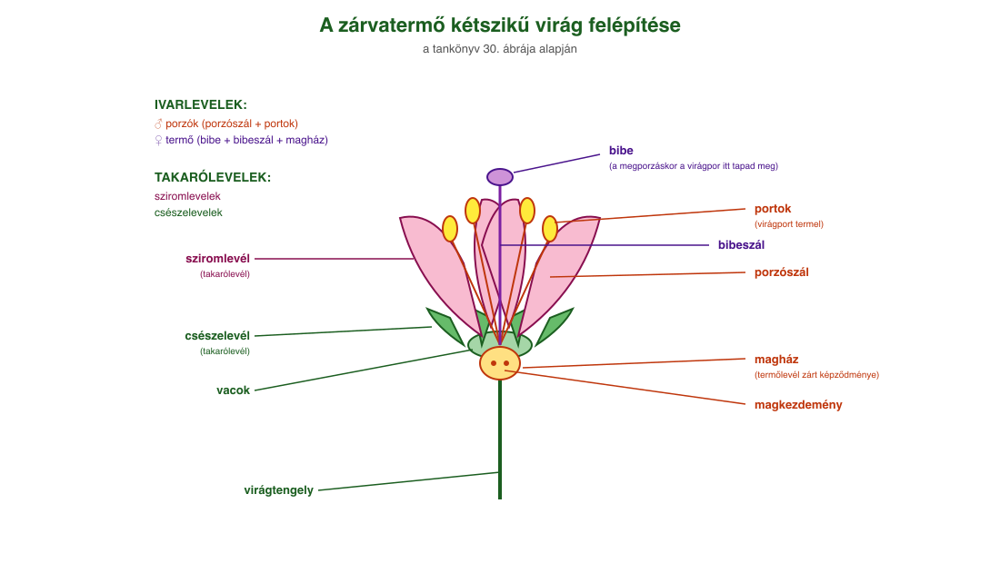
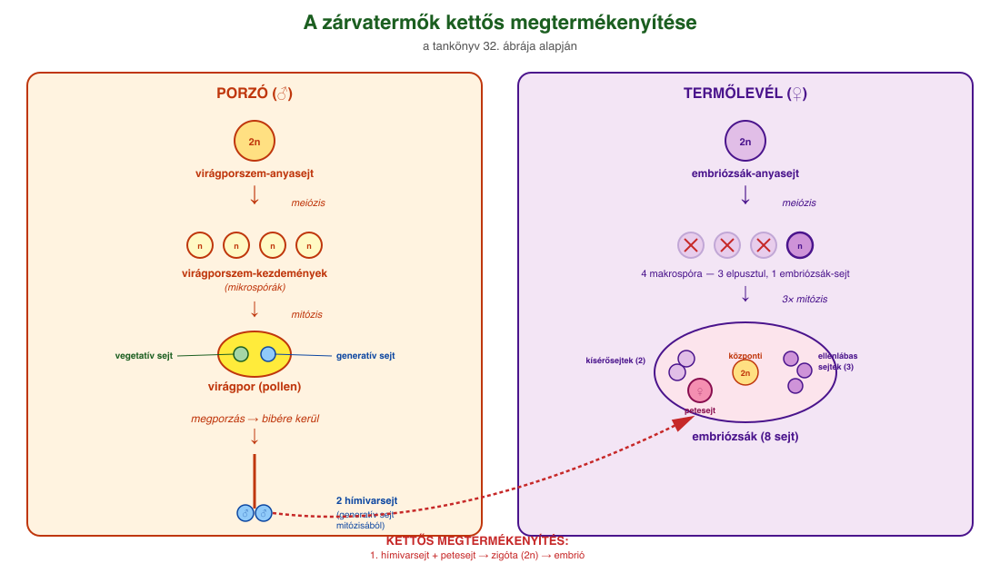
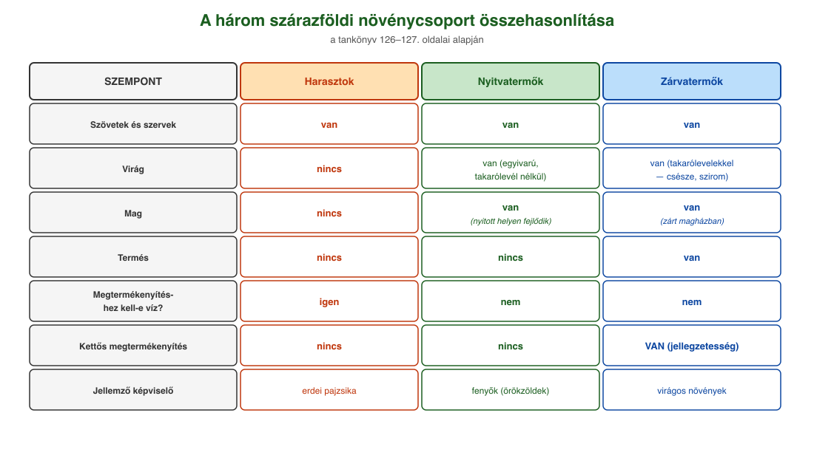

20. Szárazföldi növények és a kettős megtermékenyítés¶
A növényvilág főbb csoportjai¶
Az evolúció során a szárazföldön a növényeknek más feltételekhez kellett alkalmazkodniuk, mint vízi környezetben. A vízben élő telepes szerveződésű moszatok (és még a szárazföldi mohák is) a tápanyagokat és a vízben oldott gázokat teljes testfelületen veszik fel. A szárazföldön a növényeknek meg kell kapaszkodniuk a talajban, és onnan kell felszívniuk a vizet és a vízben oldott ásványi anyagokat. A szén-dioxidhoz és az oxigénhez a levegőből tudnak hozzájutni. Védekezniük kell a kiszáradás ellen, valamint a fényért való küzdelem is megnyilvánul: a magasabbra növő növény több fényhez juthat.
A szárazföldi feltételekhez való alkalmazkodás a növényi testszerveződés ugrásszerű fejlődését, a szövetek és a szervek kialakulását eredményezte.
A közös eredetű, hasonló alakú és azonos feladatra differenciálódott sejtek alkotják a szöveteket. A különféle szövetek adott élettani feladatok elvégzéséhez szervekbe csoportosulnak. A növény önfenntartó működéseiben szerepet kapó vegetatív szervei a gyökér, a szár és a levél. A szár és a levél együttesen a hajtást alkotja. Azokat a növényeket, amelyek testét valódi szervek építik fel, hajtásos növényeknek nevezzük. Hajtásos növények a harasztok, a nyitvatermők és a zárvatermők. Utóbbi két csoport fajfenntartó működéséért felelős szaporítószervei a virág és mag, ezért összefoglaló nevük: virágos növények.
Harasztok¶
A harasztok szövetekkel és szervekkel rendelkező, virágtalan növények. A harasztoknak van gyökerük, száruk és levelük, de nincs virágjuk, magjuk és termésük.
A szárazföldi növények közül elsőként a harasztok csoportjába tartozó növényeknél alakultak ki a szövetek és a szervek. A bőrszövet lehetővé tette a kiszáradás elleni védelmet, a benne található gázcserenyílások és párologtatás révén biztosítják a szállítószövetekben a víz áramlását a gyökértől a hajtáscsúcs irányába. A szállítószövet segítségével valóra vált a növényekben a nedvkeringés lehetősége, a szilárdítószövet megjelenése pedig a mohákénál nagyobb méretű növények kialakulását eredményezte. Így a gyökér feladata a rögzítés, valamint a víz és a benne oldott ásványi anyagok felvétele, a száré és a leveleké a tartás és az anyagszállítás, a levélé pedig a gázcsere, a párologtatás és a fotoszintézis.
Nyitvatermők¶
A nyitvatermők a szárazföldi létformához még a harasztoknál is jobban alkalmazkodtak. Új szervként jelenik meg a virág és a mag. A virág módosult levelekből álló, korlátolt növekedésű, rövid szártagú szaporítóhajtás. A mag a virágos növények magkezdeményéből fejlődő nyugalmi állapotú szaporítószerv, ami tartalmazza a csírát (embriót), valamint az azt körülvevő táplálószövetet és a maghéjt. A virág és a mag lehetővé teszi a víztől független szaporodást, és sokkal jobban biztosítja az új növényegyed embriójának a védelmét.
A nyitvatermők nevüket onnan kapták, hogy a virágaikban a termőlevelek nem zárulnak magházzá, a magkezdemények nyitott helyen, a termőlevelek tövében fejlődnek maggá. Termésük nincs. Virágaik egyivarúak, csak ivarlevelet tartalmaznak, takaróleveleik nincsenek. A szaporodásuk a víztől független (nem kell víz a megtermékenyítéshez). Jellemzően szárazföldi növények.
A nyitva termő növények legismertebb képviselői a fenyők osztályába tartoznak. Kiterjedt erdőségeket alkotnak a tajgában és a magashegységekben, ahol nagyon zord éghajlaton kell megélniük. A faszerzet fagyásgátló gyanta itatja át, a fa koronájának alakja olyan, hogy a hó könnyen lecsússzon róla. A levelek a lehető legkisebb felszínű tűlevelek, amelyeket vastag viaszréteg von be. A fenyők osztályába tartozó fajok döntő többsége örökzöld, azaz leveleiket folyamatosan hullajtják, cserélik.
Zárvatermők¶
A zárvatermők virágaiban a termőlevél már zárt magházat alakít ki, ezzel is biztosítva a mag még védettebb helyen történő fejlődését. A záródó termőlevél csúcsi része a bibe, itt tapad meg megporzáskor a virágpor (pollen). A virágban az ivarlevelek (porzólevelek, termőlevél) mellett takarólevelek (csészelevelek, sziromlevelek vagy lepellevelek) is megjelennek, ezek védik az ivarleveleket, illetve a színes takarólevelek segíthetik a megporzás folyamatát a rovarok csalogatásával.
A zárvatermők magjait termés is védi. A termés a zárva termő virág termőjéből a megtermékenyítés után kialakuló képződmény, mely magába zárva hordozza a magokat, és az elterjesztésükben is fontos szerepet játszik. A magok széllel, vízzel vagy állatokkal történő terjesztéséhez a terméseken különféle segítő képletek alakulhatnak ki.
A zárvatermők evolúciós újításai közé tartozik még a szállítószövetekben a vízszállító csövek és a rostacsövek megjelenése (még hatékonyabb tápanyagszállítást tesznek lehetővé), valamint a hajszálgyökerek bőrszövetén a gyökérszőrök kialakulása. Általuk nagyobb felületen képesek a növények a víz és a tápanyag felvételére.
A zárvatermők kettős megtermékenyítése¶
A zárvatermők fejlődésmenetére is jellemző a mohákról és a harasztoknál már megismert kétszakaszos egyedfejlődés. A zárvatermőknél azonban nemcsak egyféle spóra jön létre, hanem kisebb (mikrospóra) és nagyobb spórák (makrospóra) is keletkeznek. Az ivaros (haploid) nemzedék nagyon lerövidül, előtelep már nem fejlődik, a teljes ivaros szakasz csak pár osztódásból és néhány sejt keletkezéséből áll.
A porzókban az ún. virágporszem-anyasejtek (diploid, 2n) hozzák létre meiózissal a mikrospórákat, másnéven virágporszem-kezdeményeket (haploid, n). Ezekből jön létre a virágpor (pollen), ami a mikrospóra mitózisa révén egy vegetatív és egy generatív sejtet tartalmaz. A virágpor rovarok segítségével vagy a szél útján rákerül a bibére (megporzás). A vegetatív sejt enzimekkel egy tömlőt képez a magház irányába, a magkezdeményhez, melyen a generatív sejt leereszkedik, miközben mitózissal két hímivarsejtre osztódik.
A termőlevélben az embriózsák-anyasejt (diploid, 2n) meiózissal osztódva négy makrospórát (embriózsáksejt) hoz létre, de ezek közül csak egy marad életben, a többi három elpusztul. Az embriózsáksejt mitózissal háromszor osztódik, így jön létre a nyolc sejtből álló embriózsák. A nyolc sejt: 1 petesejt, 2 kísérősejt, 3 ellenlábas sejt és 2 központi sejt. Utóbbiak egybeolvadnak, és végül egy diploid sejtet alkotnak.
A tömlőn érkező első hímivarsejt megtermékenyíti a petesejtet, ebből lesz a zigóta (diploid, 2n), majd az embrió. A második hímivarsejt pedig a diploid központi sejttel egyesül, belőlük fejlődik a mag táplálószövete (triploid, 3n). Ezt a folyamatot nevezzük kettős megtermékenyítésnek, ami a zárvatermő növények jellegzetessége. A magkezdemény burkából alakul ki a maghéj, ami körülveszi a táplálószövetet és az embriót.
Ábrák¶

A zárvatermő virág részei: csészelevelek és sziromlevelek (takarólevelek), porzószál és portok (porzó/hímivarlevél), bibe, bibeszál, magház és magkezdemények (termőlevél). A magház a magot védő zárt képződmény, csúcsi része a bibe — ide tapad meg megporzáskor a virágpor.

Bal oldalon: virágporszem-anyasejt (2n) meiózissal 4 virágporszem-kezdeményt (n) hoz létre, ebből lesz a virágpor (pollen), ami mitózissal vegetatív és generatív sejtből áll. Jobb oldalon: embriózsák-anyasejt (2n) meiózissal 4 sejtet, ebből 1 él tovább, és háromszori mitózissal jön létre a 8 sejtből álló embriózsák (petesejt, 2 kísérősejt, 3 ellenlábas sejt, 2 központi sejt). A pollentömlőn érkező két hímivarsejt egyike a petesejtet termékenyíti meg (zigóta 2n → embrió), a másik a központi sejtet (táplálószövet 3n).

A harasztok, nyitvatermők és zárvatermők összehasonlítása a szövet, szerv, virág, mag, termés, megtermékenyítéshez szükséges víz szempontjából.
Az anyag az 1. tankönyv 126, 127, 128. oldalain található.